Julretsu
사용 설명서
실수가 비용이 되기 전에 잡아 주는 스프레드시트.
버전 1.2.0
Circuitspecter Studio
Copyright (c) 2026 Matthew Menchinton & Circuitspecter Studio
Circuitspecter Studio
Copyright (c) 2026 Matthew Menchinton & Circuitspecter Studio
Julretsu는 Windows, macOS, Linux에서 쓰는 데스크톱 스프레드시트입니다. 이미 익숙한 스프레드시트와 똑같이 동작합니다. 셀 격자, 입력하는 즉시 다시 계산되는 수식, 서식, 정렬, 차트, 인쇄까지 모두 있습니다. 통합 문서는 내 컴퓨터 안에만 저장됩니다.
Julretsu가 다른 점은 안전망입니다. 잘못 입력한 금액, 행을 빠뜨린 합계, 한 행 어긋나게 붙여넣은 데이터 같은 스프레드시트 실수는 해마다 기업에 실제 손해를 입힙니다. Julretsu는 이런 실수를 편집하는 순간에 찾아내고, 큰 변경은 유지하기 전에 보여 주며, 모든 변경을 통합 문서 안에 기록해 둡니다.
SUM, AVERAGE, IF 같은 수식을 쓰고, 워크시트끼리 연결합니다..xlsx 통합 문서를 열고 저장합니다.Julretsu 웹사이트에서 내 컴퓨터에 맞는 설치 파일을 내려받으세요. Julretsu 1.2.0은 다음 패키지로 제공됩니다.
| 컴퓨터 | 파일 | 요구 사항 |
|---|---|---|
| Windows | Julretsu-1.2.0-Windows-Setup.exe | Windows 10 또는 11(64비트), OpenGL 3.3을 지원하는 그래픽 |
| Mac | Julretsu-1.2.0-macOS.dmg | macOS 13.3 Ventura 이상, Apple Silicon 또는 Intel |
| Linux(Ubuntu, Debian, Mint) | Julretsu-1.2.0-linux-amd64.deb | 64비트 Intel 또는 AMD, X11이나 XWayland 데스크톱 |
| Linux(모든 배포판) | Julretsu-1.2.0-linux-x86_64.tar.gz | 위와 같음. 설치가 필요 없습니다 |
.julretsu 통합 문서를 두 번 클릭했을 때 Julretsu로 열지 여부를 정할 수 있습니다.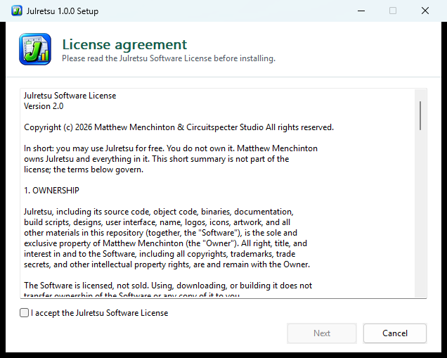
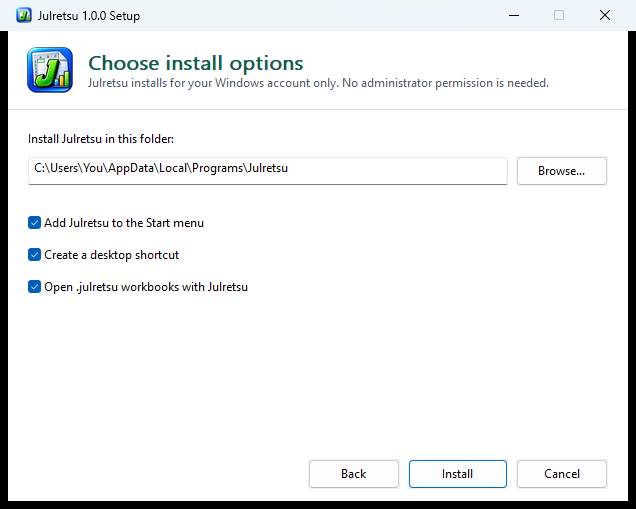
Ubuntu, Debian, Linux Mint 등: .deb 파일을 두 번 클릭해 소프트웨어 센터로 설치하거나, 내려받은 폴더에서 다음 명령을 실행하세요.
sudo apt install ./Julretsu-1.2.0-linux-amd64.deb
설치하면 애플리케이션 메뉴에 Julretsu가 나타나고 .julretsu 파일이 Julretsu로 열립니다.
다른 배포판: .tar.gz 파일을 원하는 위치에 풀고 압축을 푼 폴더 안의 bin/julretsu를 실행하세요.
sudo apt install zenity).| # | 구성 요소 | 하는 일 |
|---|---|---|
| 1 | 메뉴 | 편집, 데이터, 서식, 보고서, 통합 문서, 보기 메뉴에 모든 명령이 있습니다. |
| 2 | 빠른 실행 | 저장, 실행 취소, 다시 실행을 언제나 한 번에 누를 수 있습니다. |
| 3 | 창 단추 | Julretsu 창을 최소화, 최대화, 닫습니다. 위쪽 두 줄의 빈 곳을 끌면 창이 움직입니다. |
| 4 | 통합 문서 이름 | 작업 중인 파일과 저장되지 않은 변경이 있는지 보여 줍니다. |
| 5 | 셀로 이동 | C4 같은 주소를 입력하고 Enter를 누르면 그 셀로 이동합니다(Ctrl+K). |
| 6 | 파일과 리본 탭 | 파일은 파일 메뉴를 엽니다. 탭으로 리본을 바꿉니다: 홈, 서식, 수식, 검토, 보기, 도움말. |
| 7 | 통합 문서 단추 | 리본 축소, 도움말 열기, 통합 문서 최소화, 복원, 닫기. |
| 8 | 리본 | 선택한 탭에서 가장 많이 쓰는 명령을 다른 오피스 프로그램처럼 묶어 놓았습니다. |
| 9 | 수식 입력줄 | 선택한 셀의 주소와 실제 내용을 보여 줍니다. 여기서 편집하고 Enter를 누르거나 적용을 클릭하세요. |
| 10 | 탐색 | 시트, 템플릿, Lua 작업 공간, AI 도우미, 설정. |
| 11 | 격자 | 셀 영역입니다. 활성 셀에는 녹색 테두리와 모서리의 작은 채우기 핸들이 있습니다. |
| 12 | 시트 단추와 합계 | 워크시트를 전환합니다. 옆에는 선택한 셀의 개수, 합계, 평균이 표시됩니다. |
| 13 | 상태 표시줄 | 채워진 셀 수, 시트 검사 배지, 메시지, 확대/축소 슬라이더. |
TRUE, FALSE, 또는 =로 시작하는 수식을 입력합니다.=로 시작하거나 숫자처럼 보이는 텍스트를 그대로 저장하려면 앞에 작은따옴표를 붙이세요. 예를 들어 '=hello나 '00123은 입력한 그대로 유지됩니다.긴 텍스트는 자기 셀 안에만 표시되고 끝에 "..."이 붙습니다. 셀 위에 마우스를 올리거나 수식 입력줄을 보면 전체 내용을 확인할 수 있습니다. 셀보다 넓은 숫자는 잘못 읽히지 않도록 ###으로 표시됩니다. 확대하거나 수식 입력줄에서 확인하세요.
Ctrl+Z로 실행을 취소하고 Ctrl+Y로 다시 실행합니다. 빠른 실행 단추를 써도 됩니다. 붙여넣기, 정렬, 매크로는 한 번에 취소됩니다.
$가 붙은 참조는 고정됩니다.선택 영역 모서리의 작은 사각형을 아래나 오른쪽으로 끕니다. 수식은 참조가 조정된 채로 복사됩니다. 5와 10처럼 숫자 두 개로 시작하면 Julretsu가 15, 20, 25와 같이 연속 데이터를 이어 갑니다. 홈, 편집, 채우기로 아래쪽이나 오른쪽으로 채울 수도 있습니다.
Ctrl+F를 누르면 현재 시트의 값과 수식을 검색합니다. 다음 찾기를 클릭해 일치하는 셀을 차례로 확인하세요.
수식은 =로 시작하며, 사용하는 셀이 바뀌면 자동으로 다시 계산됩니다. 예를 들어 예제 예산의 E4 셀에는 =C4*D4, 즉 수량 곱하기 단가가 들어 있습니다.
| 사용할 수 있는 것 | 예 |
|---|---|
| 숫자, 따옴표로 묶은 텍스트, TRUE와 FALSE | =42, ="Paid", =TRUE |
| 셀 참조와 범위 | =B2, =SUM(B2:B9), =SUM(A1:C3) |
| 사칙연산 | + - * /와 괄호, 예: =(B2+B3)*1.2 |
| 비교 | = <> < <= > >=, 예: =B2>100 |
| 함수 | 하는 일 | 예 |
|---|---|---|
SUM | 숫자를 더합니다. 텍스트와 빈 셀은 무시합니다. | =SUM(E4:E9) |
AVERAGE | 범위에 있는 숫자의 평균입니다. | =AVERAGE(D4:D9) |
IF | 두 결과 중 하나를 고릅니다. 항상 조건, 참일 때의 결과, 거짓일 때의 결과 세 부분이 필요합니다. | =IF(E4>1000,"Review","OK") |
SHEET | 다른 워크시트의 셀을 읽습니다. | =SHEET("Budget","E11") |
LUA | 짧은 Lua 계산을 실행합니다. | =LUA("return cell('E11') * 1.05") |
열의 합계를 가장 빠르게 구하려면 열을 선택하고 홈, 편집, 자동 합계, 합계를 선택하세요. Julretsu가 선택 영역 바로 아래에 SUM 수식을 넣어 줍니다.
| 표시 | 뜻 |
|---|---|
#DIV/0! | 0으로 나누었거나 숫자가 없는 범위의 평균을 구했습니다. |
#VALUE! | 숫자가 필요한 자리에 텍스트가 쓰였습니다. |
#REF! | 참조가 시트 바깥을 가리킵니다. |
#NAME? | 알 수 없는 함수 이름입니다. |
#CYCLE! | 수식이 직접 또는 다른 셀을 거쳐 자기 자신을 참조합니다. |
#NUM! | 결과가 너무 커서 표현할 수 없습니다. |
#PARSE! | 수식을 읽을 수 없습니다. 괄호와 따옴표를 확인하세요. |
홈 리본에는 일상적으로 쓰는 서식 도구가 있습니다. 선택한 셀에 적용되며, 행 번호를 클릭해 행 전체를 선택했다면 그 행에 적용됩니다.
| 그룹 | 도구 |
|---|---|
| 클립보드 | 붙여넣기(또는 값 붙여넣기), 잘라내기, 복사. |
| 글꼴 | 글꼴, 크기, 크게와 작게, 굵게, 테두리, 채우기 색, 글꼴 색. |
| 맞춤 | 왼쪽, 가운데, 오른쪽, 또는 자동(숫자는 오른쪽, 텍스트는 왼쪽). |
| 숫자 | 일반, 숫자, 통화, 백분율, 날짜, 쉼표 형식과 소수 자릿수 늘리기/줄이기. |
| 스타일 | 좋음, 나쁨, 보통, 제목, 머리글, 합계, 입력, 메모 같은 미리 만들어 둔 셀 스타일과, 머리글 행과 줄무늬 행이 있는 표 스타일. |
| 셀 | 행, 열, 워크시트를 삽입하고 삭제하며 셀 서식을 엽니다. |
| 편집 | 자동 합계, 채우기, 지우기, 정렬 및 필터, 찾기 및 선택. |
세부 설정이 필요하면 서식, 선택한 셀 서식(또는 셀, 서식, 셀 서식)을 선택하세요. 글꼴 종류(산세리프, 세리프, 고정 폭), 크기, 굵게, 테두리, 맞춤, 표시 형식, 소수 자릿수, 글꼴 색과 채우기 색을 지정할 수 있습니다.
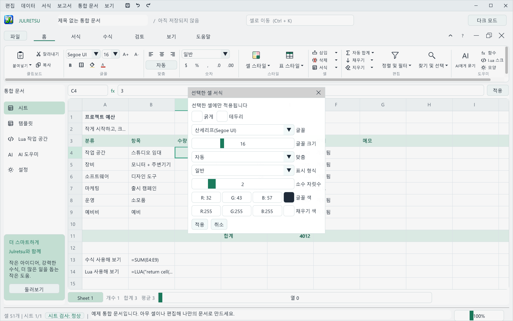
| 형식 | 1234.5의 표시 |
|---|---|
| 일반 | 1234.5 |
| 숫자(소수 2자리) | 1234.50 |
| 통화 | $1,234.50 |
| 쉼표 | 1,234.50 |
| 백분율(0.25, 소수 0자리) | 25% |
| 날짜 | Excel 방식의 날짜 일련번호를 날짜로 표시합니다(예: 2026-09-20) |
서식 탭에는 행 전체에 쓰는 빠른 도구가 있습니다. 행 굵게, 녹색 채우기, 소수 자릿수 줄이기와 늘리기, 초기화입니다. 머리글 행과 합계 행에 쓰기 좋습니다.
머리글 행을 포함해 표를 선택한 뒤 홈, 스타일, 표 스타일에서 색을 고르세요. Julretsu가 머리글을 굵게 색칠하고 테두리를 넣고 한 줄 건너 음영을 넣습니다.
셀을 선택한 뒤 홈, 셀, 삽입 또는 삭제를 사용하세요(데이터 메뉴에도 있습니다). 행은 선택한 셀 위에, 열은 왼쪽에 삽입됩니다. 다른 곳의 수식은 계속 올바른 셀을 가리키도록 자동으로 갱신됩니다.
SHEET와 LUA 참조는 자동으로 조정할 수 없으므로, 삽입하거나 삭제하기 전에 제거하도록 안내합니다.필터를 걸 열의 셀을 클릭한 뒤 데이터, 활성 열 필터를 선택하고 찾을 텍스트를 입력하세요. 그 텍스트가 들어 있는 행만 표시되며(대/소문자를 구분합니다), 1행은 머리글로 항상 보입니다. 다시 모두 보려면 데이터, 필터 해제를 선택하세요. 필터는 데이터를 삭제하지 않습니다. 숨겨진 행을 지키려면 정렬, 붙여넣기, 삭제 전에 필터를 해제하세요.
보기 메뉴에서 첫 행 고정, 첫 열 고정 또는 둘 다를 선택하면 스크롤해도 머리글이 계속 보입니다.
구조화된 표는 한 덩어리의 데이터를 묶어 두어 표가 올바르게 늘어나도록 합니다. 머리글 행과 데이터 행을 하나 이상 선택한 뒤 데이터, 구조화된 표를 선택하고 이름을 입력한 다음 선택 영역을 표로 만들기를 클릭하세요. 합계 행 포함을 선택하면 숫자 열마다 Julretsu가 합계를 넣고 관리합니다.
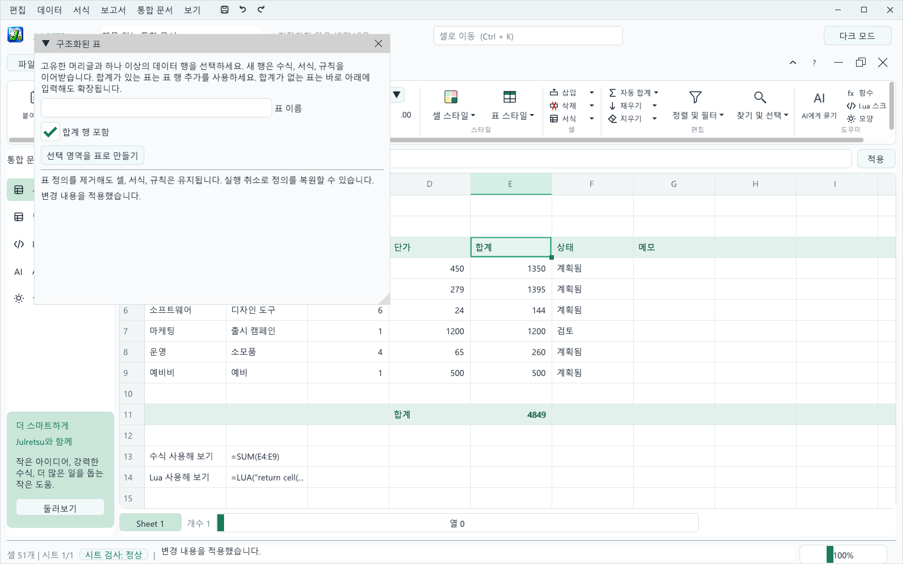
통합 문서 하나에 워크시트를 최대 64개까지 넣을 수 있습니다. 격자 왼쪽 아래의 시트 단추로 시트를 전환하고, 통합 문서, 시트 관리에서 시트를 추가, 복제, 이름 변경, 순서 변경, 삭제할 수 있습니다.
다른 시트의 값을 쓰려면 SHEET에 시트 이름과 셀 주소를 따옴표로 넣으세요. 예: =SHEET("Q1 Sales","B12"). 시트 이름을 바꾸면 수식 안의 이름도 함께 바꾸세요.
Ctrl+S, 빠른 실행의 저장 단추, 또는 파일, 저장으로 저장합니다. 처음 저장할 때 폴더와 이름을 정합니다. 사본을 따로 저장하려면 파일, 다른 이름으로 저장(Ctrl+Shift+S)을 사용하세요. 통합 문서는 Ctrl+O로 열거나 .julretsu 파일을 두 번 클릭해 엽니다.
.julretsu 파일에는 값, 수식, 서식, 모든 워크시트, Lua 스크립트, 변경 기록이 모두 들어 있습니다. 저장하지 않은 변경이 있는 통합 문서를 닫거나 바꿀 때는 Julretsu가 항상 먼저 확인합니다.
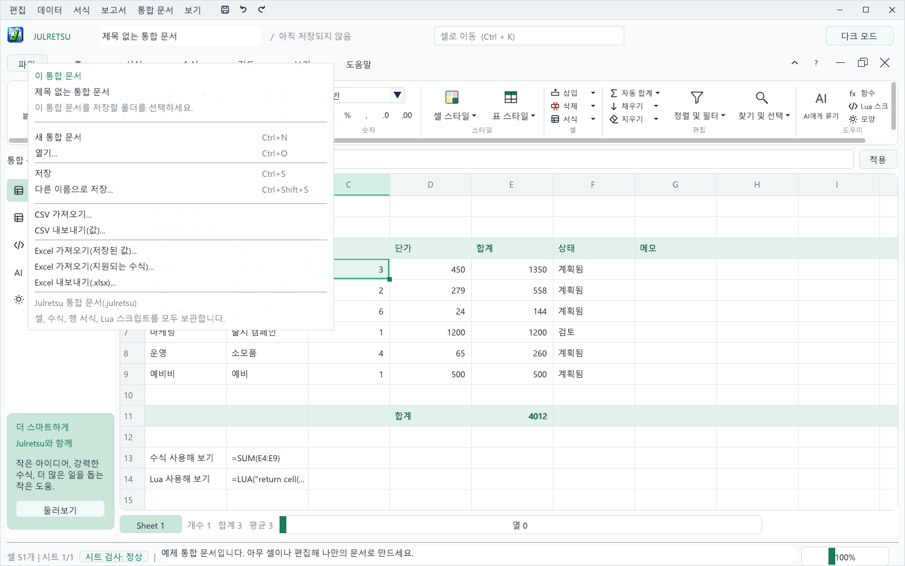
저장하지 않은 작업이 1분을 넘으면 Julretsu가 조용히 복구 사본을 만들고 1분마다 갱신합니다. Julretsu나 컴퓨터가 갑자기 종료되면 다음에 시작할 때 그 사본을 복원할지 물어봅니다. 복원을 선택한 뒤 다른 이름으로 저장으로 통합 문서를 저장하세요. 정상적으로 저장하거나 종료하면 복구 사본은 삭제됩니다. 통합 문서 메뉴에서 끄거나 직접 열 수도 있습니다.
복원 지점은 나중에 되돌아갈 수 있는 통합 문서 전체의 스냅숏입니다. 편집, 복원 지점 또는 검토 탭의 복원 지점 단추를 사용하세요. 먼저 통합 문서를 저장한 뒤 이름을 입력하고 복원 지점 만들기를 클릭합니다.
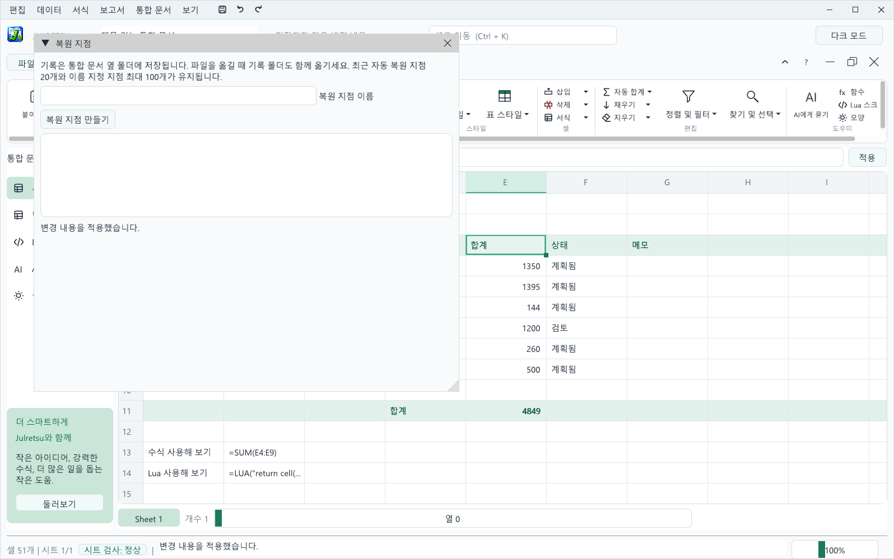
저장할 때마다 Julretsu가 저장 전 복원 지점도 만들어 두므로, 잘못 편집한 결과만 남는 일은 없습니다.
파일, CSV 가져오기와 파일, CSV 내보내기를 사용하세요. Julretsu는 UTF-8 CSV 파일을 읽고 쓰며, 쉼표나 따옴표, 여러 줄이 들어 있는 값도 처리합니다. 가져올 때 숫자와 TRUE, FALSE는 인식되고 나머지는 텍스트가 됩니다. CSV 파일 안의 수식은 절대 실행되지 않습니다.
내보낸 CSV 파일에는 계산된 값이 들어갑니다. =, +, -, @로 시작하는 텍스트는 앞에 작은따옴표를 붙여 보호하므로, 다른 스프레드시트 프로그램이 수식으로 실행하지 않습니다.
파일, Excel 가져오기는 .xlsx 파일의 모든 워크시트를 셀별 서식과 지원되는 유효성 검사 규칙과 함께 읽습니다. Excel이 마지막으로 계산한 결과를 가져오려면 저장된 값을, 사칙연산, 비교, SUM, AVERAGE, IF를 살아 있는 수식으로 유지하려면 지원되는 수식을 선택하세요. 다른 시트를 가리키는 참조는 SHEET 수식으로 들어옵니다. 불러오기 전에 시트별로 무엇이 들어오고 무엇이 들어오지 않는지 Julretsu가 정확히 보여 줍니다.
파일, Excel 내보내기는 통합 문서 전체를 .xlsx 파일로 저장합니다. 모든 워크시트와 지원되는 수식, 셀 서식, 그리고 Excel이 이해하는 드롭다운, 숫자, 날짜 규칙이 함께 저장됩니다. Excel로 표현할 수 없는 수식은 계산된 값으로 기록되며, 몇 개가 그렇게 되었는지 메시지로 알려 줍니다.
.julretsu 사본을 보관하세요.Julretsu는 값비싼 스프레드시트 오류로 이어지는 일상적인 실수를 지켜봅니다. 작업을 막지는 않고, 무엇이 이상해 보이는지 설명한 뒤 판단은 사용자에게 맡깁니다.
큰 붙여넣기, 채우기, 지우기, 매크로 실행 후, 데이터가 있던 행이나 열을 삭제한 후, 옆 열을 남겨 둔 정렬 후, 또는 수식을 덮어썼을 때 Julretsu는 이 변경 내용 검토를 보여 줍니다. 변경은 이미 시트에 반영되어 있고, 대화 상자에는 영향을 받은 셀이 이전 값과 새 값과 함께 모두 나열됩니다.
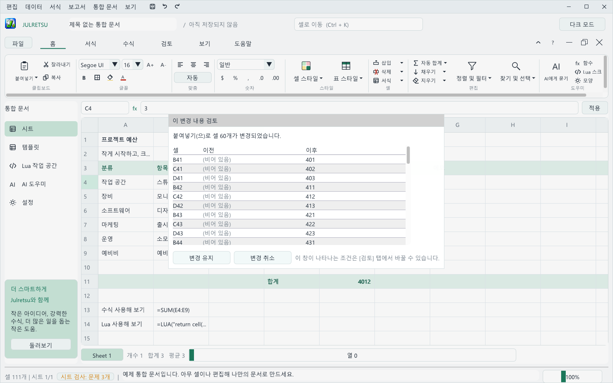
검토 탭에서는 몇 개의 셀이 바뀔 때 확인할지 정하거나 검토를 끌 수 있습니다. 일부만 정렬한 경우, 삭제된 데이터, 바뀐 수식, 크기가 맞지 않는 숫자는 항상 검토합니다.
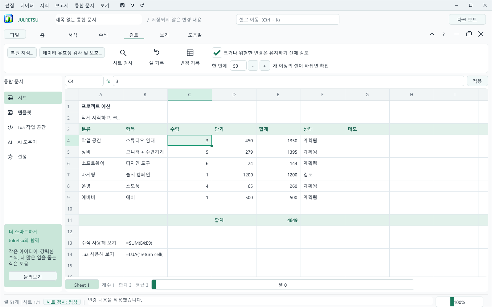
같은 열의 다른 값보다 훨씬 크거나 작은 숫자를 입력하면(예: 450 정도의 금액이 있는 열에 4500000) 상태 표시줄이 바로 알려 줍니다. 실수였다면 Ctrl+Z를 누르세요.
상태 표시줄의 시트 검사 배지는 시트에 문제가 있는지 항상 보여 줍니다. 배지를 클릭하거나 검토, 시트 검사를 선택하면 패널이 열립니다. Julretsu는 다음을 찾습니다:
SUM 또는 AVERAGE 범위각 문제에는 이동, 안전한 해결 방법이 있을 때의 원클릭 수정, 무시가 있습니다. 빨간 점은 잘못된 결과가 나올 수 있는 문제입니다. 모든 수정은 되돌릴 수 있습니다.
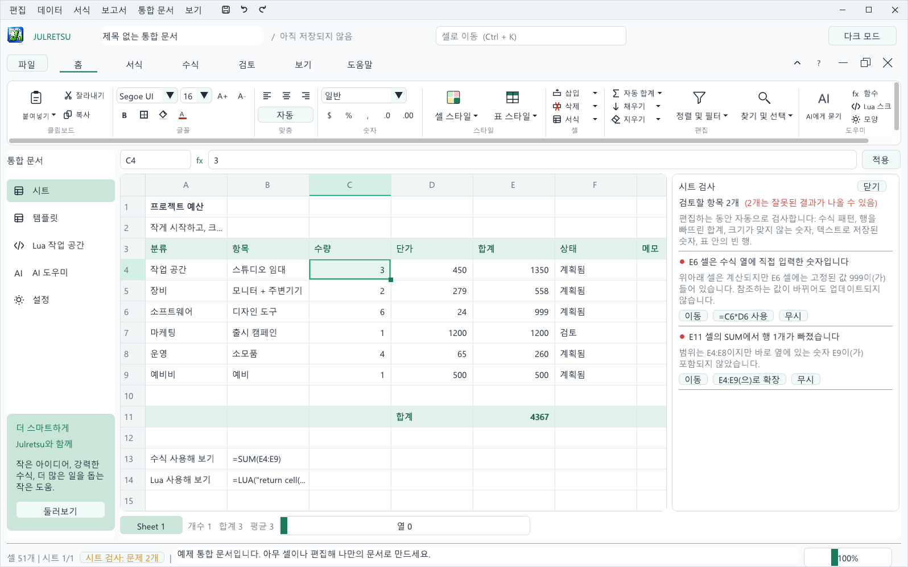
셀을 오른쪽 버튼으로 클릭해 셀 기록을 선택하거나 검토, 셀 기록을 사용하면 그 셀의 모든 변경을 볼 수 있습니다. 언제 바뀌었는지, 무엇 때문에 바뀌었는지, 이전 값과 이후 값이 표시됩니다. 검토, 변경 기록은 시트의 모든 변경을 보여 줍니다.
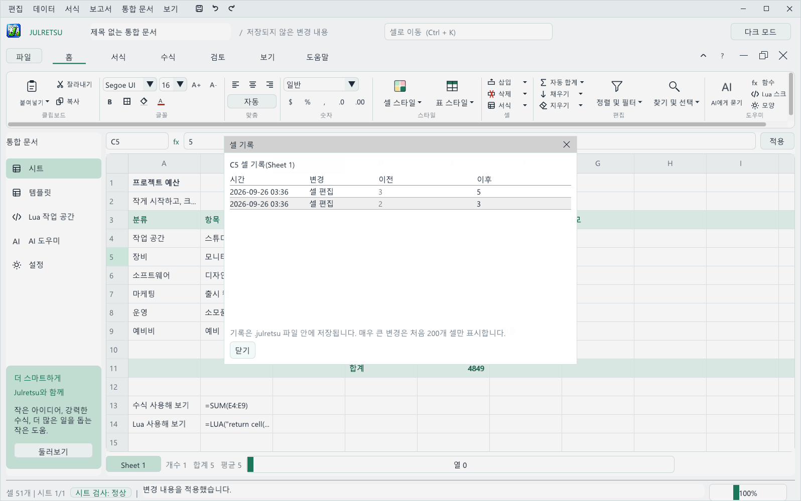
기록은 .julretsu 파일 안에 저장되므로 통합 문서와 함께 이동합니다. Julretsu는 최근 1,000건의 변경을 보관하고, 아주 큰 변경은 처음 200개 셀만 표시합니다. 파일을 공유할 때 기록을 함께 보내고 싶지 않다면 변경 기록을 열고 기록 지우기를 선택하세요.
유효성 검사 규칙은 셀에 어떤 값을 넣을 수 있는지 정해 두어, 잘못된 값을 입력하는 순간 거부합니다. 범위를 선택한 뒤 데이터, 데이터 유효성 검사 및 보호 또는 검토 탭의 단추를 사용하세요.
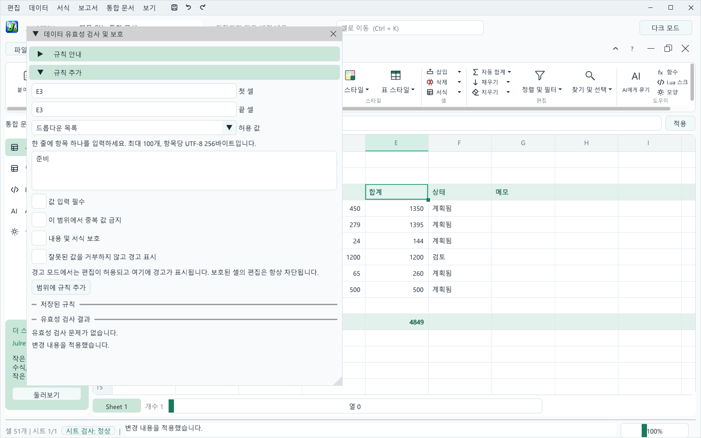
| 허용 값 | 허용되는 내용 |
|---|---|
| 모든 값 | 무엇이든 허용합니다. 값 입력 필수나 보호와 함께 쓰면 좋습니다. |
| 숫자, 정수 | 최솟값과 최댓값 사이의 값(양 끝 포함). |
| 날짜 | YYYY-MM-DD 형식으로 쓴 두 날짜 사이의 날짜. |
| 드롭다운 목록 | 한 줄에 하나씩 입력한 항목 중 하나. 최대 100개까지 넣을 수 있습니다. |
규칙은 직접 입력할 때만이 아니라 모든 작업에 적용됩니다. 규칙을 어기는 붙여넣기, 채우기, 정렬, 매크로, AI 제안은 전체가 거부되므로 절반만 적용되는 일이 없습니다. 이미 문제가 있는 시트에 규칙을 추가해도 데이터는 그대로 두고 문제 목록만 보여 줍니다. 목록의 셀 주소를 클릭하면 해당 셀로 이동합니다.
.julretsu 파일에만 저장되며 CSV나 Excel로 내보낼 때는 포함되지 않습니다. 규칙이 있는 통합 문서는 Julretsu 1.1.0 이하에서는 열 수 없습니다.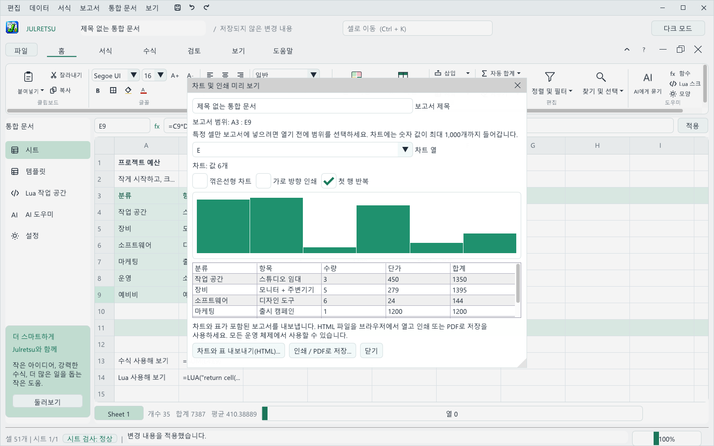
탐색 막대의 템플릿을 클릭하면 가상의 샘플 데이터와 작동하는 수식이 들어 있는 통합 문서를 열 수 있습니다. 샘플 통합 문서 목록에서 하나를 고르고 선택한 템플릿 사용을 클릭하세요. Julretsu가 현재 통합 문서를 먼저 저장할지 물어봅니다.
| 템플릿 | 내용 |
|---|---|
| 프로젝트 예산 | 분류별 계획 비용과 실제 비용, 합계와 차이. |
| 월별 매출 | 12개월 동안의 온라인 매출과 매장 매출을 목표와 비교합니다. 꺾은선형 차트에 좋습니다. |
| 가계 지출 | 분류별 계획 지출과 실제 지출, 남은 금액. |
| 재고 계획 | 보유 재고, 재주문 기준, 단가, 제품별 재고 가치. |
| 주간 프로젝트 시간 | 12주 동안의 디자인, 개발, 테스트 시간과 주별 합계. |
템플릿은 차트를 빠르게 시험해 보기에 좋습니다. 템플릿을 열고 표를 선택한 뒤 보고서, 선택 범위 차트 / 인쇄를 선택하세요.
Lua 매크로는 반복되는 편집을 자동화합니다. 탐색 막대의 Lua 작업 공간 또는 홈, 도우미, Lua 스크립트에서 엽니다. 편집기에는 스크립트를 쓰는 코드 탭과 매크로에서 호출할 수 있는 항목을 정리한 빠른 참조 탭이 있습니다. 코드 아래에는 커서 위치가 표시되고, 실행 결과에는 마지막 실행 내용이 나옵니다.
cell('A1')은 매크로가 시작되기 전의 셀 값을 읽습니다.set('A1', value)는 변경을 예약합니다.다음 예제는 예산의 모든 수량에 1을 더합니다.
for row = 4, 9 do set('C' .. row, cell('C' .. row) + 1) end
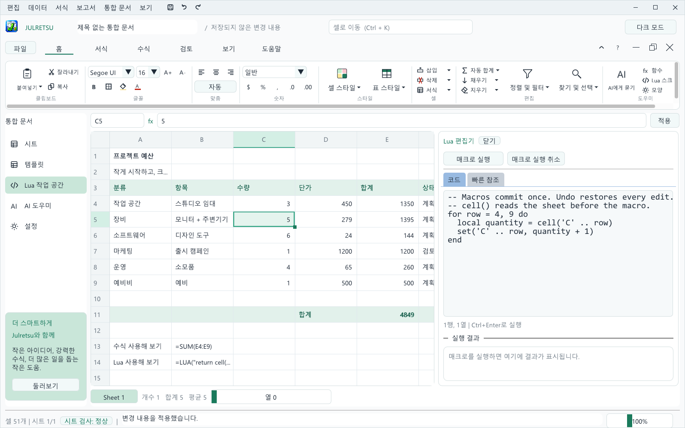
Julretsu는 인터넷 없이도 완전하게 동작합니다. 원한다면 사용 중인 AI 공급자를 연결해 "합계 아래에 10% 예비비 행을 추가해 줘"처럼 평소 말로 변경을 요청할 수 있습니다.
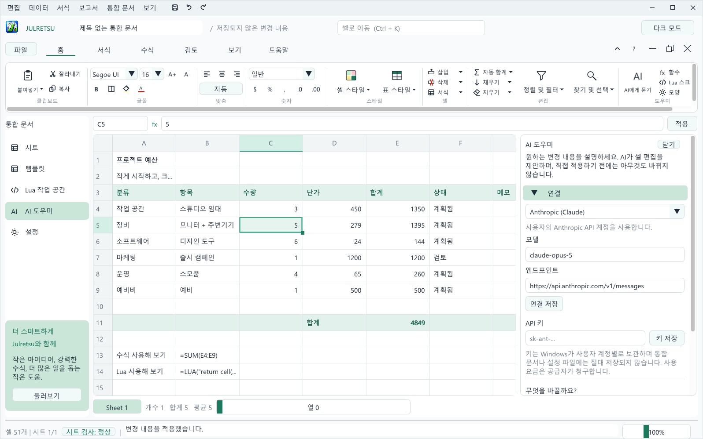
Julretsu는 영어, 한국어, 일본어를 지원합니다. 처음 시작할 때는 컴퓨터의 언어를 따릅니다. 바꾸려면 탐색 막대의 설정을 클릭해 언어에서 고르거나 보기, 언어를 사용하세요. 선택한 언어는 이 기기에 저장됩니다.

언어 설정은 메뉴, 단추, 메시지, 시트 검사, 내보낸 보고서, 새로 만드는 샘플 통합 문서에 적용됩니다. 사용자가 입력한 셀 내용과 이미 저장한 통합 문서는 번역되지 않습니다.
어떤 언어로 설정하더라도 평소 쓰는 입력기로 한국어와 일본어를 모든 셀에 입력할 수 있습니다. Julretsu는 필요한 글자를 컴퓨터에 설치된 글꼴에서 가져오므로 어떤 확대 비율에서도 글자가 선명합니다.
sudo apt install fonts-noto-cjk). Windows와 macOS에는 이미 들어 있습니다.오른쪽 위의 다크 모드를 클릭하거나 보기, 어두운 테마를 사용하세요. Julretsu가 선택을 기억합니다.
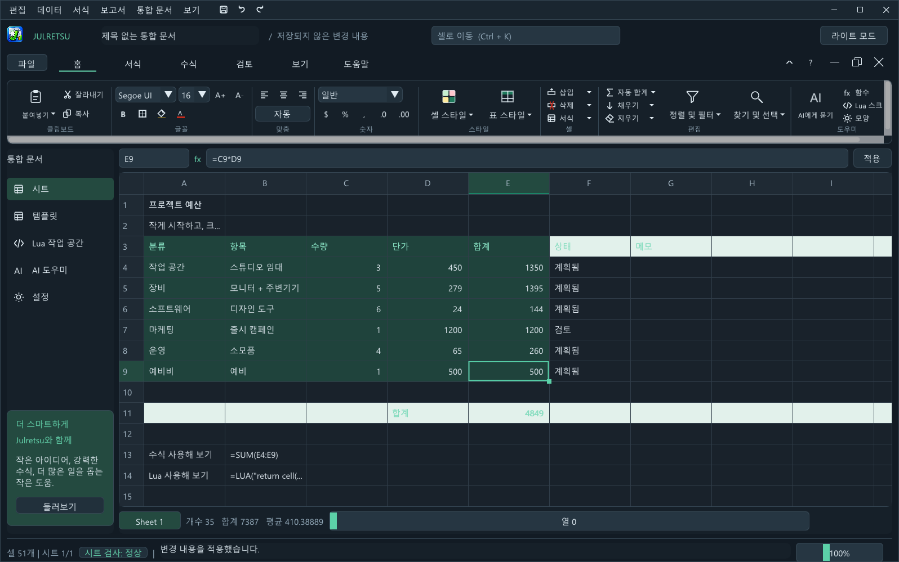
리본 탭 오른쪽의 단추는 통합 문서 자체를 조작합니다. 최소화는 창 아래의 작은 막대로 줄이고, 복원은 Julretsu 안에서 옮기고 크기를 바꿀 수 있는 창으로 만들며, 닫기는 통합 문서를 닫고(먼저 저장 여부를 묻습니다) 빈 통합 문서를 엽니다.
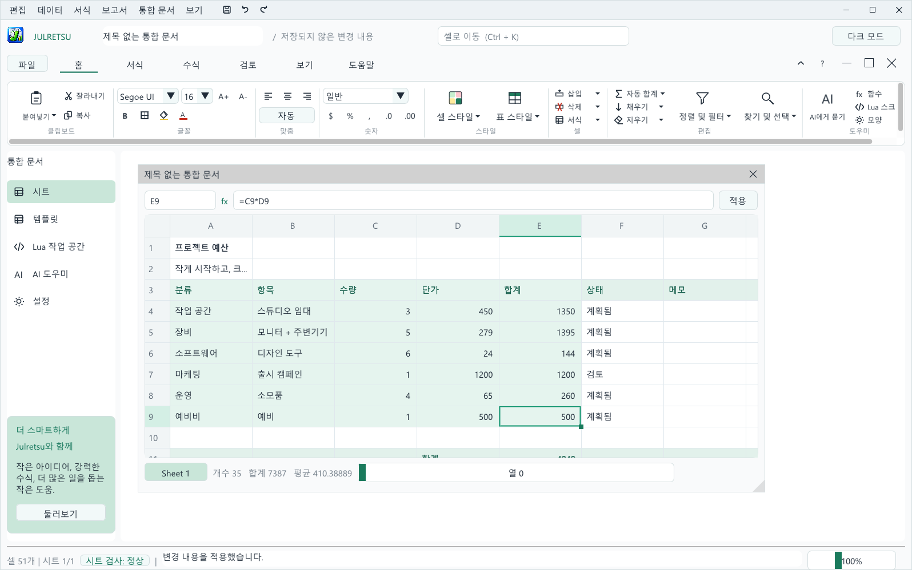
Mac에서는 이 표의 Ctrl을 Cmd로 바꿔 사용하세요.
| 동작 | 키 |
|---|---|
| 새로 만들기, 열기, 저장, 다른 이름으로 저장 | Ctrl+N, Ctrl+O, Ctrl+S, Ctrl+Shift+S |
| 실행 취소, 다시 실행 | Ctrl+Z, Ctrl+Y |
| 복사, 잘라내기, 붙여넣기, 값 붙여넣기 | Ctrl+C, Ctrl+X, Ctrl+V, Ctrl+Shift+V |
| 선택한 셀 편집 | F2 또는 두 번 클릭 |
| 편집 확정 또는 취소 | Enter, Esc |
| 내용 지우기 | Delete |
| 활성 셀 이동 | 화살표 키, Tab, Page Up, Page Down |
| 첫 셀, 마지막 셀 | Ctrl+Home, Ctrl+End |
| 셀로 이동 | Ctrl+K |
| 찾기 | Ctrl+F |
| 범위 선택 | Shift+클릭 |
| 선택 영역에 행 추가 또는 제거 | 행 번호를 Ctrl+클릭 |
| 행 스크롤, 열 스크롤 | 마우스 휠, Shift+마우스 휠 |
| 검토한 변경 유지 또는 취소 | Enter, Esc |
| 문제 | 해결 방법 |
|---|---|
| 설치할 때 Windows가 "PC를 보호했습니다"라고 표시합니다. | 추가 정보를 클릭한 뒤 실행을 클릭하세요. 2장을 참고하세요. |
| macOS가 Julretsu의 악성 소프트웨어 검사를 할 수 없다고 합니다. | 응용 프로그램에서 Julretsu를 Control 키를 누른 채 클릭하고 열기를 선택하거나, 개인 정보 보호 및 보안에서 확인 없이 열기를 사용하세요. |
| Linux에서 zenity나 kdialog에 관한 메시지가 나옵니다. | 둘 중 하나를 설치하세요: sudo apt install zenity. Julretsu가 열기와 저장 대화 상자에 사용합니다. |
| Julretsu가 시작되지 않고 OpenGL이나 그래픽 관련 메시지가 나옵니다. | 그래픽 드라이버를 업데이트하세요. Julretsu는 Windows와 Linux에서 OpenGL 3.3이 필요합니다. |
셀에 ###이 보입니다. | 숫자가 셀보다 넓습니다. 확대하거나 수식 입력줄에서 확인하세요. |
| 수식에 오류 코드가 보입니다. | 5장의 오류 표를 확인하고 시트 검사 패널도 살펴보세요. |
| 정렬, 붙여넣기, 삭제가 되지 않습니다. | 먼저 적용된 필터를 해제하세요(데이터, 필터 해제). |
| 행 삽입이 거부됩니다. | SHEET나 LUA 참조를 먼저 제거하세요. 이 참조는 자동으로 조정할 수 없습니다. |
| Julretsu를 시작할 때 복구 안내가 나옵니다. | 지난번에 Julretsu가 비정상적으로 종료되었습니다. 작업을 되찾으려면 복원을, 사본을 버리려면 현재 통합 문서 유지를 선택하세요. |
.julretsu 파일을 두 번 클릭해도 Julretsu가 열리지 않습니다. | Windows에서는 설치 파일을 다시 실행하고 .julretsu 통합 문서를 Julretsu로 열기를 선택하세요. Mac에서는 파일, 열기로 여세요. |
sudo apt remove julretsu를 실행하세요.제거해도 통합 문서는 삭제되지 않습니다. 모양 설정은 사용자 설정 폴더에 저장되며 원하면 직접 삭제할 수 있습니다.
Julretsu는 Julretsu 소프트웨어 라이선스에 따라 무료로 사용할 수 있습니다. 개인, 교육, 업무 용도로 설치해 사용할 수 있고, 사용자가 만든 통합 문서는 사용자의 것입니다. Julretsu 자체는 Matthew Menchinton과 Circuitspecter Studio의 자산으로 남습니다. 오픈 소스가 아니며 판매, 재배포, 수정은 할 수 없습니다. 전체 라이선스는 설치 프로그램에 표시되고 LICENSE 파일로도 제공됩니다.
Julretsu에는 각자의 라이선스를 따르는 서드파티 구성 요소가 포함되어 있으며 THIRD_PARTY_NOTICES.md에 정리되어 있습니다: Dear ImGui, GLFW, Lua, sol2, stb, miniz, pugixml.
문의나 사용 허가 요청은 github.com/Deathbringer98을 통해 소유자에게 연락하세요.
Julretsu 1.2.0 사용 설명서. Copyright (c) 2026 Matthew Menchinton & Circuitspecter Studio. All rights reserved.